No. 1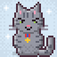
Генерал (General)
♂ boy · grey tabby
friendly: 2/5
spot: the bench by the 1st entrance
fed by: everyone
crimes: took a whole kolbasa from Uncle Vitya's bag (2025)
The oldest. Was here when I was born. Sits like a statue and judges.
No. 2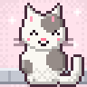
Пятнашка (Spots)
♀ girl · white patch
friendly: 4/5
spot: the heating pipe
fed by: Apa Gulnara, 1st floor
crimes: none proven
Mother of half the courtyard. Very polite.
No. 3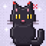
Шайтан
♂ boy · black solid
friendly: 1/5
spot: under the Niva
fed by: the night guard of the shop
crimes: scratched the Niva, the Niva's owner, the Niva's owner's son
The name is not a joke. He is a shaitan. I love him from 2 metres.
No. 4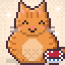
Борщ (Borsch)
♂ boy · ginger tabby
friendly: 5/5
spot: the kindergarten fence
fed by: the kindergarten kitchen
crimes: ate a borsch (from a bowl left on a windowsill, 2nd floor)
Very fat, very happy. Rolls over for anyone.
No. 5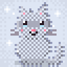
Тень (Shadow)
♀ girl · grey solid
friendly: 0/5
spot: nobody knows
fed by: nobody (she says)
crimes: unknown, that's the point
Seen four times in a year. Photographed once. A legend.
No. 6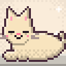
Батон (Baton)
♂ boy · cream solid
friendly: 4/5
spot: the doorstep of the 3rd entrance
fed by: Ms Oksana, 4th floor
crimes: lies across the doorstep so you have to step over him
Long like a loaf of bread.
No. 7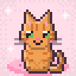
Мыш (Mysh)
♀ girl · ginger tabby
friendly: 5/5
spot: anyone's sofa
fed by: half the building
crimes: goes into flats when doors open, sleeps on sofas (see uyalar.net/komnata)
Small, ginger, a cat of the people. Has five homes and no home.
No. 8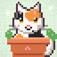
Кексик (Cupcake)
♀ girl · calico patch
friendly: 3/5
spot: my windowsill (from outside)
fed by: me ♡
crimes: sits in my flowerpots
Mine. Not officially. Officially Mama says no cats.
No. 9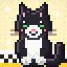
Такси
♂ boy · white tuxedo
friendly: 3/5
spot: the bonnets of warm taxis
fed by: the taxi drivers at the corner
crimes: footprints on every white Nexia in the district
Black and white like the old taxi checkers, so the drivers named him.
No. 10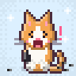
Фантик (Wrapper)
♂ boy · orange patch
friendly: 4/5
spot: the slide
fed by: the children
crimes: stole a whole bag of sunflower seeds
Kitten of Spots, born in spring 2025. Now a teenager. Loud.
No. 11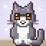
Профессор
♂ boy · grey tuxedo
friendly: 3/5
spot: the stairs of the 2nd entrance, 3rd step
fed by: the library lady, 2nd entrance
crimes: none, he is above crime
Wears a white collar, like a professor. Sits on the 3rd step every day at 18:00.
No. 12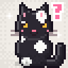
Новенькая (the new one)
♀ girl · black patch
friendly: 1/5
spot: behind the garages
fed by: under review
crimes: too early to say
Appeared in October 2026. Census card provisional.